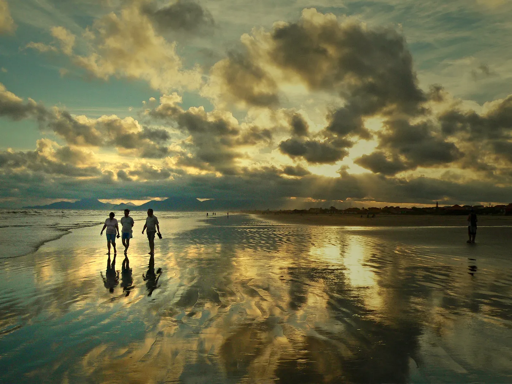
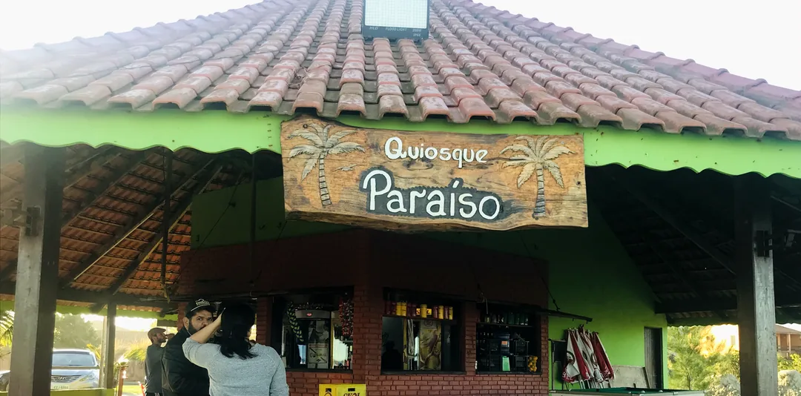
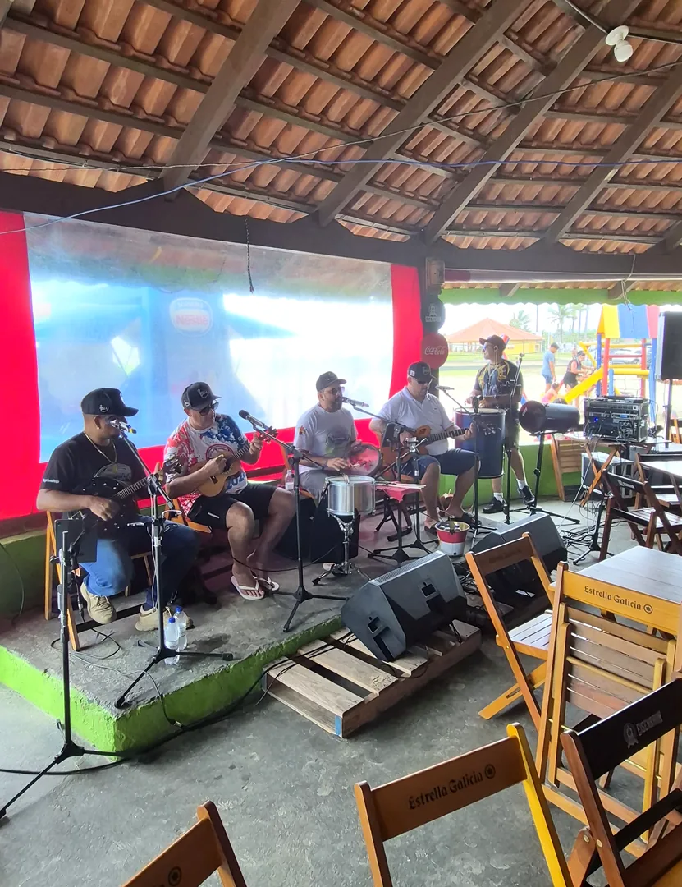
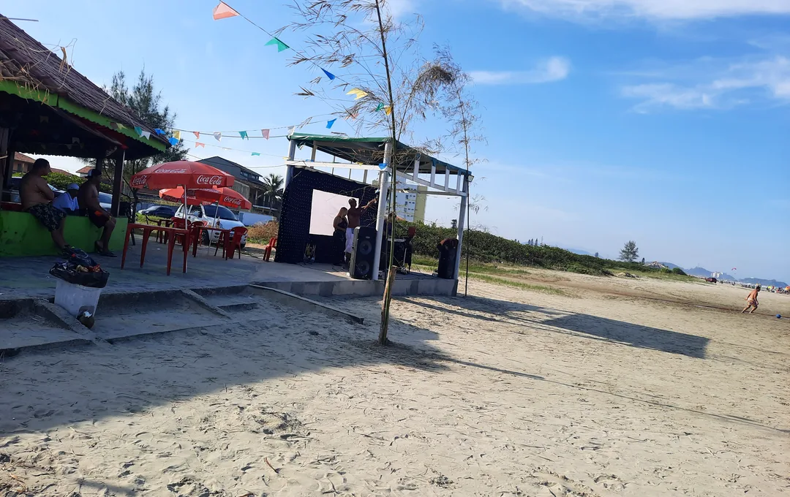

Foto: Edmilson Sanches, CC BY-SA 3.0, Wikimedia Commons
Pé na areia no Tupy.
Mesas e guarda-sóis na areia, sem consumação mínima.
Sombra e água fresca
Abra o guarda-sol e fique à vontade.
O quiosque





Fotos do quiosque: Google Maps do Quiosque Paraíso (clientes e equipe).
Reserve sua mesa
Quem vem, volta
914 avaliações no Google Maps
Ler no Google →“Um dos melhores Quiosques de Cibratel. Ótimo atendimento, bons preços e Samba aos domingos.”
Allan H. · Google Maps
“Ótimo lugar, pessoal bem atencioso, preço acessível, ótimo atendimento, recomendo super e não tem preço mínimo de consumação.”
Allison K. · Google Maps
“Eu amo esse quiosque. O Rodrigo e seus funcionários são excelentes.”
Andreia S. · Google Maps
Como chegar
- EndereçoAv. Gov. Mário Covas Júnior, 2151 · Tupy (Cibratel), Itanhaém - SP · 11740-000
- Horário (Google Maps)Seg. a sex., 9h às 18h · Sáb. e dom., 8h às 19h
- WhatsApp(13) 97407-6921 · Rodrigo
Tem consumação mínima?
Não. Você pode sentar nos guarda-sóis ou na área coberta sem consumação mínima.
Tem samba?
Roda de samba aos domingos. Chame no WhatsApp para confirmar a atração do dia.
Tem acessibilidade?
O Google Maps indica entrada, banheiro e estacionamento acessíveis para cadeirantes.